INDIVIDUAL STUDY &
THAI GEOSOCIAL DESIGN
Wat Muang (วัดม่วง จ. อ่างทอง)
 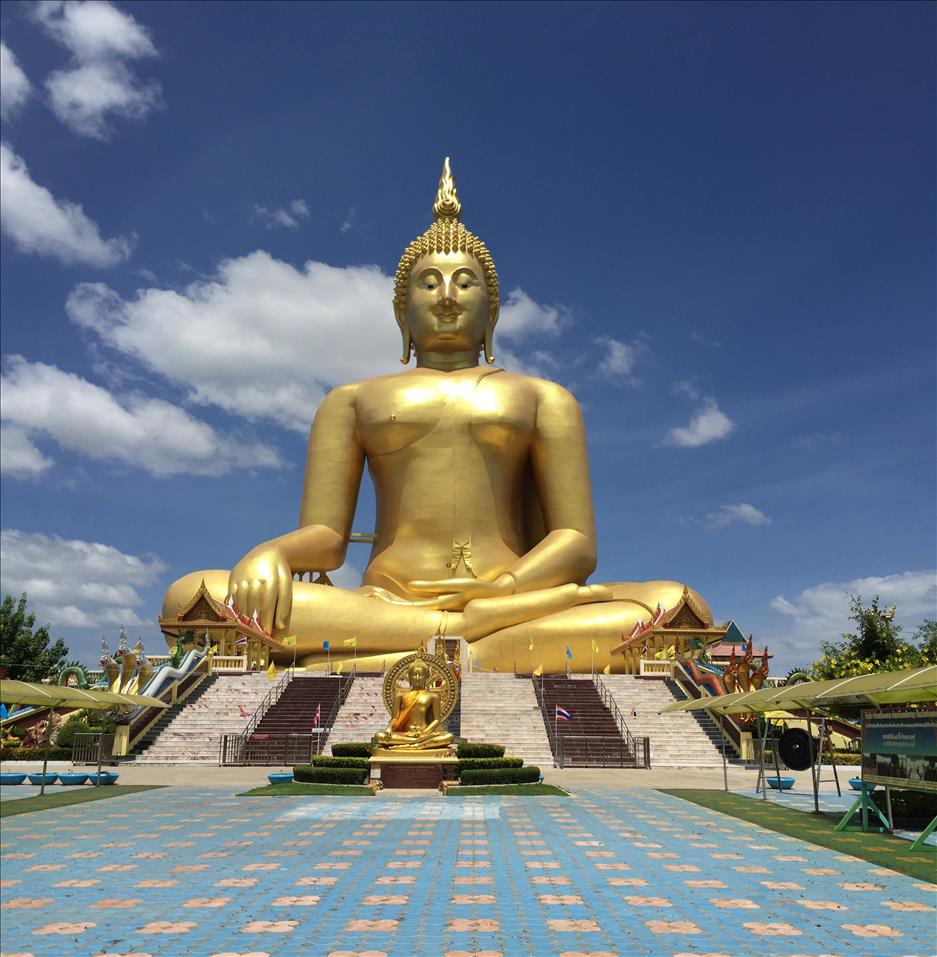
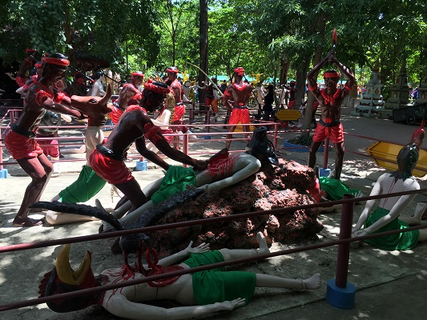
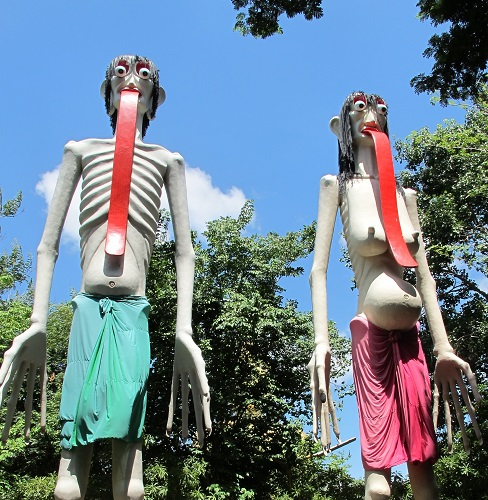
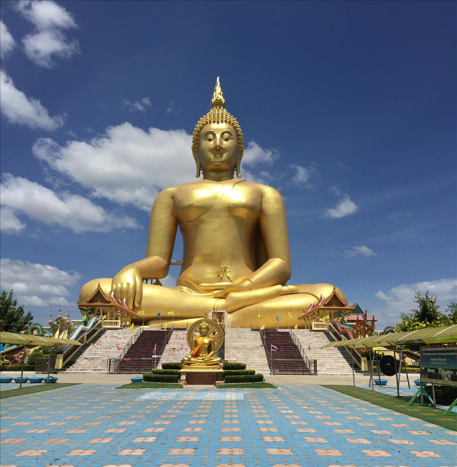
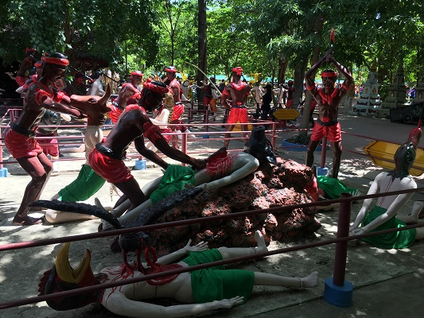
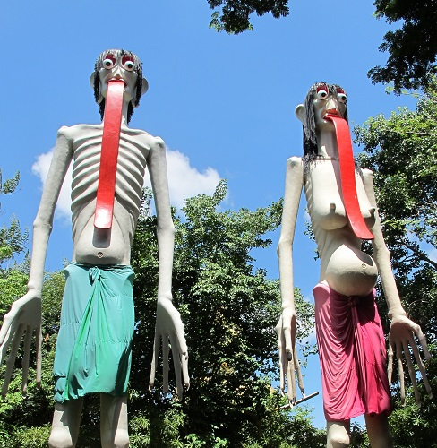
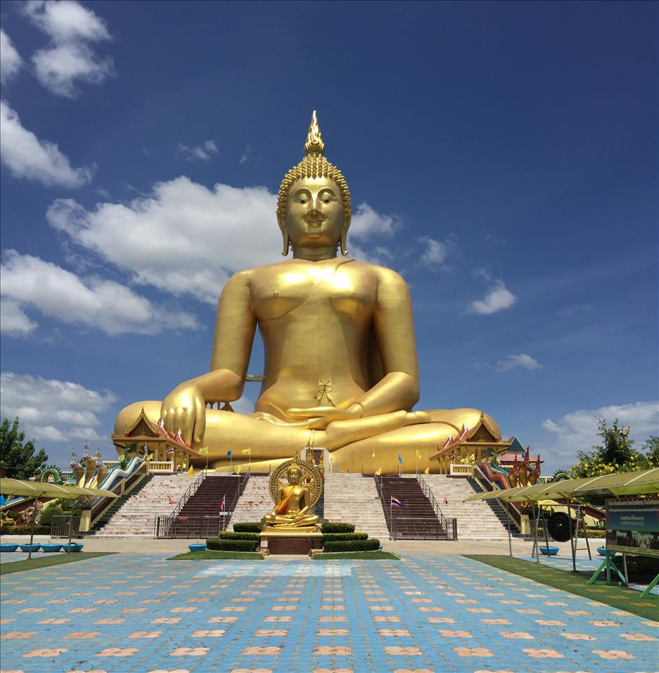
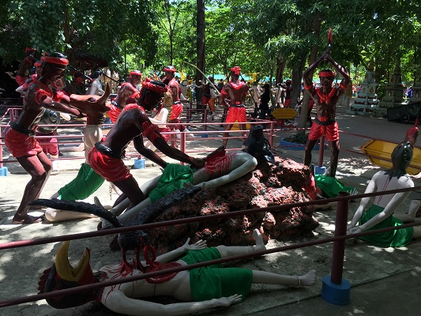
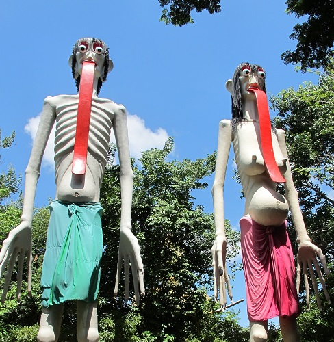
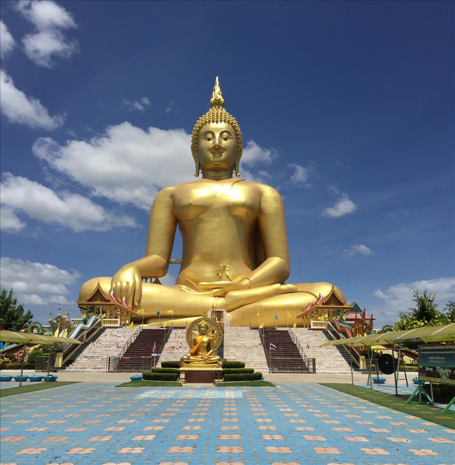
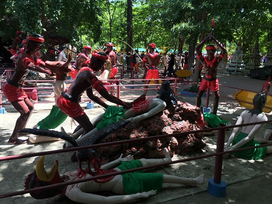
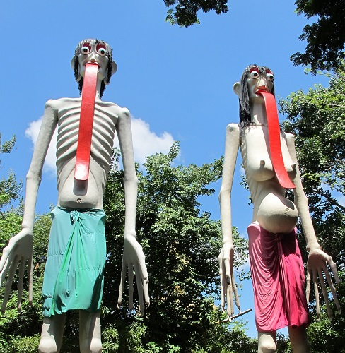

อุโบสถ
อุโบสถของวัดม่วงที่ถูกล้อมรอบไว้ด้วยกลีบดอกบัวขนาดยักษ์ ซึ่งจัดว่าเป็นอุโบสถที่ตั้งอยู่กลางดอกบัวที่ใหญ่ที่สุดในโลก บริเวณภายในดอกบัวรอบๆ อุโบสถประดิษฐานรูปปั้นเหมือนของพระเกจิอาจารย์ชื่อดังจากทั่วประเทศ


วิหารแก้ว
ซึ่งเป็นวิหารที่ใช้กระจกชิ้นเล็กๆ ประดับตกแต่งทั่วทั้งหลังทำให้วิหารแห่งนี้มีความวิจิตรงดงามตระการตายิ่งนัก ซึ่งภายในวิหารยังมีพระพุทธรูปเนื้อ เงินแท้ประดิษฐานเป็นพระประธานองค์แรกและองค์เดียวที่ใหญ่ที่สุดในประเทศไทย ด้านข้างรายรอบด้วยรูปหล่อทองเหลืองของพระเกจิอาจารย์ชื่อดัง ชั้นล่างเป็นพิพิธภัณฑ์วัตถุมงคล และวัตถุโบราณ เปิดเฉพาะวันเสาร์ - วันอาทิตย์ ๐๙.๐๐ - ๑๗.๐๐ น.โดยสร้างขึ้นเพื่อเฉลิมพระเกียรติ ในวโรกาสที่ครองสิริราชสมบัติครบ ๕๐ ปี และมีรูปปั้นเกจิอาจารย์ชื่อ ดังทั่วประเทศ
ตำหนักพระแม่กวนอิมพันมือ
เป็นตำหนักที่ใหญ่ที่สุดในประเทศไทย เป็นองค์ทองเหลืองหนัก ๒๐ ตัน สูง ๘ เมตร มีความศักดิ์สิทิ์ตามคำขออธิฐาน

หลวงพ่อใหญ่
หลวงพ่อเกษม อาจารสุโภ เป็นผู้วางศิลาฤกษ์ ด้วยตัวของท่านเอง เมื่อวันที่ ๙ มีนาคม ๒๕๓๔ และต่อมา วันที่ ๒ พฤษภาคม ๒๕๓๔ ได้ทำพิธีตอกลงเข็มเสาเอก หลวงพ่อเกษมเป็นประธานดำเนินการก่อสร้างร่วมกับลูกศิษย์และประชาชนผู้มีใจบุญทั้งหลายเข้ามาร่วมกันก่อสร้างองค์พระ หลวงพ่อเกษมได้ตั้งนามองค์พระเอาไว้ว่า "พระพุทธมหานวมินทร์ศากยมุนีศรีวิเศษชัยชาญ" พระนามนี้หลวงพ่อเกษมตั้งใจสร้างองค์พระนี้เพื่อพระบาทสมเด็จพระเจ้าอยู่หัว รัชกาลที่ ๙ คณะลูกศิษย์หลวงพ่อเกษมได้พร้อมใจรวมพลังช่วยกันสร้างร่วมกับประชาชนผู้มีจิตศรัทธาด้วยจนการก่อสร้างองค์พระ ได้เสร็จสมบูรณ์ เมื่อวันที่ ๑๖ กุมภาพันธ์ ๒๕๕๐ มีระยะเวลาการก่อสร้างรวมประมาณ ๑๖ ปี และวัดหน้าตักองค์พระได้ ๖๓.๐๕ เมตร ความสูงจากฐานองค์พระ ถึงยอดเกศา วัดได้ ๙๕ เมตร ใช้เงินประมาณ ๑๐๔,๒๖๑,๐๘๙.๖๕ บาท


แดนนรก
หลวงพ่อเกษมท่านได้สร้างแดนนรกตามพระไตรปิฎกที่ระบุถึงเรื่องการสร้างบุญกุศลก็ได้รับบุญนั้นและการสร้างแต่บาปก็ต้องได้รับบาปตามสนองนั้น หลวงพ่อเกษมจึงได้ให้ช่างปั้นรูปหุ่นเป็นรูปคนที่มีร่างกายสูงใหญ่เสื้อผ้าไม่มีนุ่งห่มมีทั้งเพศชายเพศหญิงเรียกว่า เปรต นอกจากนั้นยังมีรูปปั้นทั้งเพศชายเพศหญิงตกอยู่ในกระทะทองแดงถูกทรมานปีนต้นไม้มีหน่ม (เรียกว่าต้นงิ้ว) รูปปั้นร่างกายเป็นคนมีหน้าตาเป็นรูปสัตว์ต่างๆ มีการถูกเฆี่ยนตีและทรมานทารุณ หลวงพ่อเกษมท่านต้องการให้ผู้มาเที่ยวชมวัดม่วงได้พิจารณาและนึกถึงหลักธรรมเพื่อให้เกิดสติ พระพุทธเจ้าได้สั่งสอนถึงการมีกตัญญูรู้คุณคนไม่เบียดเบียนทั้งคนและสัตว์ให้เกิดทุกข์เกิดความละโมบลุ่มหลงอบายมุขกิเลสตัณหาการไม่จบสิ้นของมนุษย์เมื่อถึงการอวสานของตัวเอง (ตาย) ถ้าหากได้สร้างบุญไว้ตายไปก็ได้รับบุญที่สร้างไว้และสร้างแต่บาป ฆ่าสัตว์ตัดชีวิต ข่มเหงรังแก ใส่ร้ายป้ายสี มัวเมาอบายมุขต่างๆ ฉุดคร่าหญิงอื่นที่ไม่ใช่ภรรยาตน ฯลฯ ทุกสิ่งนั้นนั่นคือ นรก